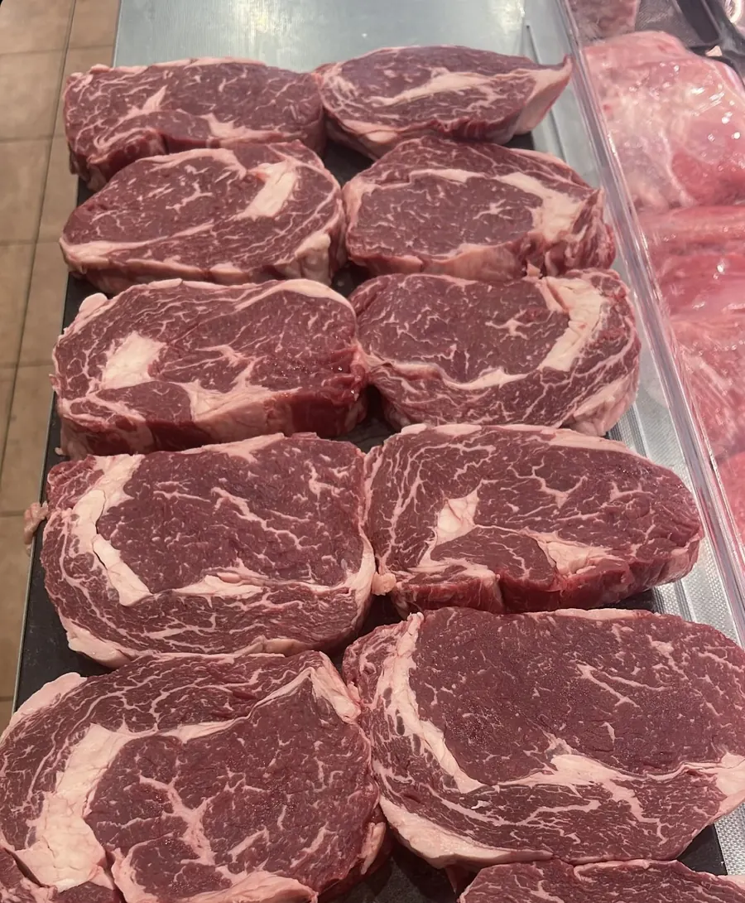

Black Angus · ΑυστραλίαRibeyeΜπριζόλα από την πλάτη
Από το μπροστινό μέρος της πλάτης, με πλούσιο μαρμάρωμα και το χαρακτηριστικό «μάτι» λίπους που λιώνει στη φωτιά.
Στη φωτιά: Δυνατή φωτιά, γύρισμα κάθε 1–2 λεπτά και 5 λεπτά ξεκούραση πριν το κόψεις.